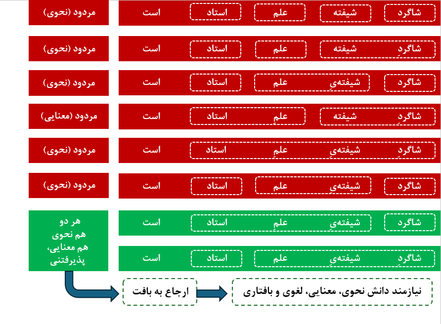
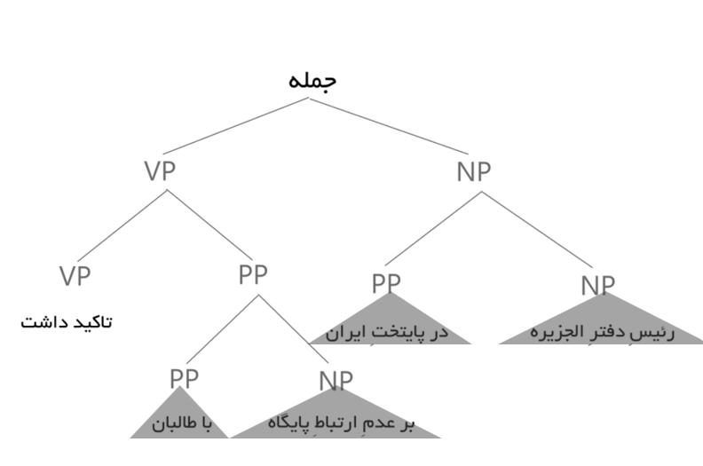
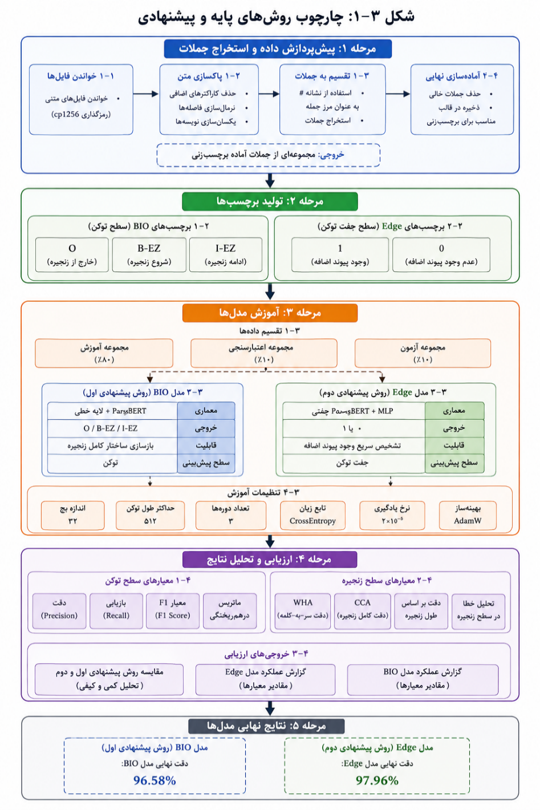

پایاننامه کارشناسی ارشد در رشته زبانشناسی رایانشی
شناسایی حوزه اضافه در زبان فارسی
با رویکرد ترکیبی مبتنی بر ترنسفورمرها
Identification of Ezafe Scope in Persian using a Hybrid Transformer-Based Approach
نگارنده و پژوهشگر:
سید محسن رضوی خسروشاهی
استادان راهنما:
جناب آقای دکتر مصطفی صالحی
جناب آقای دکتر محمود بیجنخان
زمان دفاع:
مهر ۱۴۰۵
«بسمالله الرحمن الرحیم. عرض سلام و ادب و احترام دارم خدمت اساتید و داوران گرامی و حضار محترم. موضوع رساله حاضر، شناسایی حوزه اضافه در زبان فارسی با رویکرد ترکیبی است که تحت راهنمایی اساتید بزرگوار، جناب آقای دکتر مصطفی صالحی و جناب آقای دکتر محمود بیجنخان در دانشگاه تهران به انجام رسیده است.»
اضافه برای انسان امری شهودی و آنی است، اما برای ماشین یک گره کور محاسباتی است!
در خط فارسی، کسره اضافه (واکه کوتاه /e/) در نگارش رسمی حذف میشود. این غیاب ظاهری، ابهام نحوی را به صورت نمایی در سطح جمله تشدید میکند، زیرا مرز میان گروههای اسمی، صفتها و روابط متممی مخدوش میگردد [cite: 1, 2].
■ ۱. پدیده واجشناختی و خطی
سطح کلمه
- بیش از ۳۰ درصد از کل کلمات متون رسمی فارسی درگیر رابطه اضافه هستند.
- خواننده بومی بر پایه درک شهودی و بافت معنایی کسره را تلفظ میکند، اما سیستم ماشینی هیچ نشانه خطی آشکاری دریافت نمیکند.
- حذف این نشانه باعث همشکلشدن واژگان ساده و زنجیرههای مضافالیهی پیچیده میشود.
■ ۲. چالش بنیادین سامانههای هوشمند
سطح جمله
- موتورهای تبدیل متن به گفتار (TTS): تولید لکنت و خطای فاحش در مکثها و لحن.
- ترجمه ماشینی عصبی (NMT): سردرگمی در تشخیص مرجع ضمیر و هسته معنایی عبارت.
- تجزیهگرهای نحوی (Parsers): تخریب ساختار سلسلهمراتبی درخت وابستگی جمله.
«حضار گرامی، در گام اول باید این پرسش را مطرح کنیم که چرا کسره اضافه یک معمای بزرگ است؟ ما فارسیزبانان به سادگی متن را میخوانیم و متوجه میشویم کدام کلمه مضاف است و کدام صفت. اما برای کامپیوتر، چون هیچ حرف یا اعرابی در خط رسمی نوشته نمیشود، کلمات به صورت خامی پشت سر هم میآیند. بیش از ۳۰ درصد کل متنهای فارسی اضافه دارند! اگر کامپیوتر این پیوندها را نفهمد، نه میتواند به درستی متن را به گفتار بخواند و نه میتواند آن را به انگلیسی یا زبان دیگری ترجمه کند.»
«شاگرد شیفته علم استاد است» (
ightarrow) ۳ موضع پیوند بالقوه اضافه (
ightarrow) دقیقاً (2^3 = 8) درخت اشتقاق نحوی متمایز با معانی متضاد!

شکل ۱-۱: درختهای اشتقاق نحوی و ۸ خوانش متمایز جمله بر اساس حضور یا غیاب پیوند اضافه
■ نتیجهگیری بنیادین: اضافه یک برچسب واژهای موضعی نیست، بلکه معمار اصلی هندسه کل جمله و مشخصکننده نقشهای نهاد، مسند و مضافالیه است.
«در شکل ۱-۱ اوج چالش پردازش زبان فارسی را مشاهده میفرمایید. یک جمله بسیار ساده پنجکلمهای بدون کسره، میتواند هشت درخت اشتقاق نحوی کاملاً متفاوت تولید کند. مثلاً در خوانش اول، شاگرد شیفته علم است و استاد بودن او مسند است؛ اما در خوانش دوم، شاگرد شیفته علمِ استاد است! یعنی مضافالیه تغییر میکند. پردازشگر اگر صرفاً به مجاورت نگاه کند، فریب میخورد و کل درخت نحو فرومیریزد.»
■ رویکرد سنتی: پیشبینی سطحی کلمه
دیدگاه کلمهمحور (Token-Level)
رویکرد سنتی از مدل میپرسد: «آیا واژه $w_i$ کسره اضافه دارد یا خیر؟» (طبقهبندی دودویی ۰ و ۱).
گلوگاههای روش سنتی:
- بیتوجهی به سرگروه و وابستههای پسین.
- ناتوانی در ترسیم مرزهای زنجیرههای چندکلمهای.
- ایجاد پیوندهای ناممکن و نقض قواعد دستور زبان وابستگی.
نتیجه: حتی با دقت ۹۸٪ در کلمات، بیش از ۱۰٪ کل سازهها خراب بازسازی میشوند.
■ رویکرد پیشنهادی رساله: شناسایی حوزه سازه
دیدگاه ساختارمند (Constituent-Level)
رویکرد ما میپرسد: «کدام گستره از واژگان تشکیل یک سازه منسجم اضافه را میدهند و هسته آن کدام است؟»
دستاوردهای رویکرد ساختاری رساله:
- تعیین دقیق آغاز و پایان سازه در قالب طرحواره BIO.
- مدلسازی پیوند جفتی (Edge): پیشبینی مستقیم یالهای درخت وابستگی.
- تضمین سازگاری گرامری میان کلمات متوالی در زنجیره.
جهش علمی: ارتقای مسئله از یک اعرابگذاری کورکورانه به یک تحلیل سازهای منسجم.
«تا پیش از این رساله، عموم مقالات مسئله را بسیار ساده میدیدند: برای هر کلمه یک صفر یا یک پیشبینی میکردند که آیا کسره دارد یا ندارد. ما در این رساله نشان دادیم که این نگاه به شدت خطاست! شما ممکن است ۹۸ درصد کلمات را درست بگویید، اما اگر در یک زنجیره ۴ کلمهای، یکی را اشتباه کنید، کل سازه نحوی فرو میریزد. ما مسئله را ارتقا دادیم به شناسایی «حوزه اضافه» یعنی مشخص کردن هسته، اعضای وابسته، و مرز پایانی گروه اسمی.»
«بدون شناسایی مرز سازه اضافه، موتورهای پردازش متن و گفتار فارسی با افت کیفیت ساختاری مواجه میشوند.»
🎙️ ۱. سامانههای تبدیل متن به گفتار (TTS)
صوت و واجنگاری
- تلفظ صحیح پیوندها: جلوگیری از حذف واکه /e/ و خطای ادای کلمات به صورت مجزا و بیاحساس.
- مکثهای متناسب (Prosody & Pausing): تعیین مکان درنگهای گفتاری طبیعی در مرز سازههای اضافی.
- کاربرد عملی: کتابخوانهای هوشمند، دستیاران صوتی تلفن همراه و سامانههای سخنگوی ناوبری.
🧠 ۲. تجزیهگرهای عمیق نحوی و معنایی (Parsers)
فهم زبان طبیعی
- تغذیه پارسرهای وابستگی: تثبیت یالهای گروه اسمی پیش از ورود به تحلیل کلان بندها.
- ترجمه ماشینی عصبی (NMT): جلوگیری از ترجمه گسسته کلمات و بازسازی ترکیبات ملکی (NP of NP).
- پایگاههای دانش و گرافها: استخراج نامها و اصطلاحات چندواژهای با دقت مرزبندی کامل.
■ چشمانداز ملی: ارتقای دقت موتورهای جستجوی بومی و پایگاه دادههای زبانی کشور از طریق رفع ابهام زنجیرهای.
«چرا این پژوهش ضرورت صنعتی دارد؟ دو ستون اصلی هوش مصنوعی یعنی سامانههای تبدیل متن به گفتار و موتورهای درک متن، وابستگی حیاتی به کسره اضافه دارند. اگر سیستم تبدیل متن به گفتار نداند کدام کلمه اضافه میگیرد، صدای خروجی کاملاً مکانیکی و زننده خواهد شد. از طرف دیگر در سامانههای جستجو و ترجمه، نشناختن مرز سازه، معنای ترکیبات اصطلاحی را کاملاً دگرگون میکند.»
۱
هدف اول: طراحی و استقرار بازنماییهای زبانی بافتآگاه عمیق
بهکارگیری مدل زبانی پارسبرت (ParsBERT v2.0) برای استخراج بردارهای متراکم ۷۶۸ بعدی به منظور جذب ویژگیهای معنایی، ساختاری و نحوی غنی در جملات زبان فارسی.
۲
هدف دوم: ابداع معماری پیوند جفتی (Edge Model) با لایه تطبیق ۴ مؤلفهای
صورتبندی بردار ترکیبی ۳۰۷۲ بعدی شامل ضرب هادامارد و تفاضل قدرمطلقی جهت تصمیمگیری پیوسته بر روی یالهای مجاور به جای طبقهبندی مستقل کلمات.
۳
هدف سوم: تدوین چارچوب ارزیابی سازهای ابداعی فراتر از معیارهای توکنی
تعریف سنجههای «صحت واژهبههسته» (WHA) و «دقت بازسازی کامل زنجیره» (CCA) برای سنجش بیرحمانه و واقعی عملکرد مدلها در سطح سازههای کامل زبانی.
«اهداف این رساله در سه محور اصلی مهندسی و تعریف شدند: نخست، انتقال قدرت مدلهای ترنسفورمر به حوزه نحو فارسی. دوم، نوآوری در معماری با ابداع مدل Edge که با بردار ۳۰۷۲ بعدی روابط بین واژهها را مستقیم تحلیل میکند. و سوم، معرفی معیارهای ارزیابی سختگیرانهای مانند Complete Chain Accuracy تا دیگر با نمرات کاذب ۹۸ درصدی خود را فریب ندهیم و بازسازی کامل سازه را بسنجیم.»
فرضیه ۱ (H₁)
برتری بازنمایی ترنسفورمر بر روشهای سنتی (CRF / SVM)
لایههای خودتوجهی بافتآگاه ParsBERT به دلیل درک وابستگیهای دوربرد، خطای طبقهبندی سطحی را بهطور معناداری کاهش میدهند.
معیار سنجش
F1-Score وزنی (+۵٫۸٪)
فرضیه ۲ (H₂)
برتری فرمولاسیون پیوند جفتی (Edge) بر مدل توالی کلمهای (BIO)
دستهبندی جفتکلمات متوالی بر پایه بردار تطبیق، مرزهای سازه را با دقت بالاتری نسبت به برچسبهای موضعی تعیین میکند.
معیار سنجش
WHA و CCA (+۱٫۴٪)
فرضیه ۳ (H₃)
افت غیرخطی زنجیره و مقاومت خطای مدل ترکیبی
با افزایش طول زنجیره (تعداد وابستهها)، مدلهای توالی بر اثر قانون انتشار خطای ضربی فرومیریزند، اما مدل پیوند پایداری خود را حفظ میکند.
معیار سنجش
دقت در زنجیرههای طویل ((ge 4))
«این رساله بر پایه سه فرضیه کاملاً شفاف و ابطالپذیر طراحی شد: فرضیه اول اثبات کرد که بازنمایی ترنسفورمر جهش بزرگی نسبت به مدلهای کلاسیک مانند CRF ایجاد میکند؛ فرضیه دوم نشان داد که نگاه جفتی به پیوندها (Edge) از نگاه کلمهای (BIO) در سطح سازه برتر است؛ و فرضیه سوم پایداری این رویکرد را در زنجیرههای طولانی که نقطه ضعف اصلی سامانههای پیشین بود اثبات نمود.»
«حوزه اضافه، یک زیرگراف جهتدار همبند و بدون دور است که از هسته اسمی آغاز شده و تمام وابستههای متوالی آن را تا مرز خروج از سازه در بر میگیرد.»

شکل ۱-۳: بازنمایی حوزه اضافه در درخت وابستگی نحوی (پیوند یالهای هسته به وابستهها)
۱. شرط پیوستگی (Continuity): هیچ کلمه بیگانهای درون زنجیره سازه وارد نمیشود.
۲. تقارن یکسویه (Directionality): جهت وابستگی از وابسته پسین به سمت هسته پیشین است.
۳. مرز قطعی (Maximal Boundary): سازه با رسیدن به فعل، حرف اضافه یا نشانه نگارشی پایان مییابد.
«در شکل ۱-۳ اساس نظری رساله را ملاحظه میفرمایید. ما حوزه اضافه را یک زیردرخت همبند بیشینه تعریف کردیم. یعنی این سازه سه ویژگی تخطیناپذیر دارد: اولاً پیوسته است؛ ثانیاً جهت یالها همیشه از مضافالیه یا صفت به سمت هسته اسمی است؛ و ثالثاً مرز آن قطعی و مشخص است و به محض ورود فعل یا حرف اضافه بسته میشود.»
| دوره / سال |
پژوهشگران |
پارادایم مدلسازی |
دقت تخمینی |
محدودیت بنیادین |
| نسل اول (۱۳۸۴) |
دکتر بیجنخان و همکاران |
قواعد دستوری، همآیی N-Gram و لغتنامه |
~۷۸٪ |
شکنندگی در برابر واژگان جدید و وابستگی مطلق به لغتنامه دستی |
| نسل دوم (۱۳۸۹) |
شمسفرد و حسینی |
مدلهای آماری خطی (میدانهای تصادفی شرطی - CRF) |
~۸۶٪ |
پنجره بافت محدود (۳ کلمه) و ناتوانی در پوشش وابستگیهای دوربرد |
| نسل سوم (۱۳۹۷) |
قاسمزاده و صمیمی |
یادگیری عمیق بازگشتی (BiLSTM + Word2Vec) |
~۹۲٪ |
نگاه تککلمهای و عدم تفکیک هسته از وابسته در سطح سازه |
| نسل چهارم (۱۴۰۵) |
رساله حاضر (رضوی، صالحی، بیجنخان) |
رویکرد ترکیبی مبتنی بر ترنسفورمر (BIO + Edge) |
۹۶٫۲۴٪ |
استخراج ساختار کامل سازه با کمترین افت در زنجیرههای طویل |
■ نقطه تمایز رساله حاضر: خروج از پارادایم سنتی «برچسبگذاری کلمهای» و ورود به پارادایم «بازسازی ساختار نحوی».
«همانطور که در جدول مقایسهای مشاهده میفرمایید، پردازش اضافه در ایران یک سیر ۲۰ ساله را طی کرده است. از قواعد دستوری اولیه استاد بیجنخان در سال ۸۴ با دقت ۷۸ درصد، تا مدلهای CRF و سپس شبکههای BiLSTM. اما نقطه قوت کار ما جهش به دقت ۹۶٫۲۴ درصد با حل مشکل زنجیرهها از طریق ترنسفورمرها بوده است.»
■ زبان انگلیسی: Noun Compound Bracketing
Girju et al. (2005)
در انگلیسی ترکیباتی نظیر "liver cell antibody" وجود دارند که فاقد حرف اضافه بوده و رابطه میان آنها از طریق پرانتزبندی ساختاری حل میشود:
[ [ liver cell ] antibody ] vs. [ liver [ cell antibody ] ]
- تفاوت انگلیسی با فارسی: در انگلیسی هسته در پایان میآید (Head-Final)، در حالی که فارسی هستهآغاز است.
- شباهت پردازشی: هر دو زبان نیازمند حل روابط پنهان ساختاری هستند [cite: 6].
■ زبانهای کردی و اردو: پیوند ایزافه (Izafe)
Karimi (2007), Samiian (1983)
در کردی سورانی و اردو ساختار مشابه اضافه وجود دارد، اما ویژگیهای متفاوتی در نوشتار دارند:
- زبان کردی (رسمالخط آرامی): برخلاف فارسی، مصوتها اعم از کوتاه و بلند نوشته میشوند (مانند «ی» اضافه)، لذا ابهام خطی بسیار کمتر است.
- زبان اردو: اضافه با همزه یا زیر نوشته میشود، اما عدم رعایت دقیق رسمالخط چالشهای موازی با فارسی پدید میآورد.
- تمایز زبان فارسی: حذف ۱۰۰٪ واکه در نوشتار رسمی، فارسی را به پیچیدهترین چالش محاسباتی در این خانواده بدل کرده است.
«آیا این مسئله فقط مختص زبان فارسی است؟ خیر. در انگلیسی مسئله Noun Compound Bracketing دقیقاً وجود دارد؛ مثلاً ترکیب سه کلمهای liver cell antibody که باید بفهمیم سلول کبد است یا پادتن سلول. اما در انگلیسی هسته در انتها قرار دارد، در حالی که در فارسی هسته در ابتداست. در زبانهای همخانواده مثل کردی هم اضافه داریم اما در کردی اعرابها نوشته میشوند. زبان فارسی به دلیل حذف کامل این واکه در خط رسمی، سختترین آزمون برای هوش مصنوعی در جهان است.»
«ادبیات پیشین، مسئله را به عنوان یک برچسبگذاری کور کلمهای تقلیل داده بود و از هندسه سازه غفلت میورزید!»
⚠️ نارساییهای بنیادین رویکردهای پیشین
مدلهای تککلمهای
- فقدان تمایز هسته و وابسته: در مدلهای دودویی قبلی، مشخص نبود کلمه دارای اضافه، آغازگر سازه است یا ادامه آن.
- غفلت از تخریب زنجیره: هیچ مطالعهای بررسی نکرده بود که در جملات طویل، خطای تکتک کلمات کل سازه را نابود میکند.
- گسست از درخت نحو: خروجی مدلهای پیشین مستقیماً قابل تبدیل به یالهای پارسرهای نحوی نبود.
✨ صورتبندی نوین در رساله حاضر
معماری ساختاری
- بازتعریف به عنوان زیرگراف نحوی: تعیین صریح مرزهای آغاز (B) و درون (I) و برون (O) سازه.
- مصونیت در برابر طول با مدل Edge: دستهبندی جفتکلمات متوالی جهت شکستن وابستگی آبشاری خطا.
- همترازی با استانداردهای بینالمللی: تولید مستقیم یالهای استاندارد Universal Dependencies (UD).
■ پیامد علمی: تبدیل مسئله از سطح دستهبندی باینری کلمه به مسئله تفکیک و مرزبندی سازهای در پردازش زبان طبیعی.
«شکاف پژوهشی دقیقاً کجاست؟ تمام محققان گذشته به این راضی بودند که بگویند فلان کلمه کسره دارد یا ندارد؛ اما در یک گروه اسمی پیچیده، وقتی ندانیم این کسره به کدام کلمه وصل میشود، کل معنی از دست میرود. ما با تبدیل این مسئله به تشخیص یالهای گراف، این شکاف بزرگ را پر کردیم.»

شکل ۳-۱: گردش کامل داده در پایپلاین سیستم پیشنهادی (بازنمایی ترنسفورمر، دستهبند توالی و لایه تطبیق یالها)
مرحله ۱: پیشپردازش
نرمالسازی نویسهها و توکنایزیشن WordPiece
مرحله ۲: کدگذاری
۱۲ لایه خودتوجهی ParsBERT (۷۶۸ بعد)
مرحله ۳: طبقهبندی موازی
مدل BIO (سطح توکن) + مدل Edge (یال جفتی)
مرحله ۴: رمزگشایی
تجمیع ساختاری و ساخت گراف وابستگی نهایی
«در این تصویر کل معماری کار ما به وضوح ترسیم شده است. متن از بالا وارد میشود، بدون اینکه نیازی به برچسبزنهای نحوی شکننده داشته باشد. پارسبرت متن را کدگذاری میکند و دو شاخه موازی به کار میافتند: یکی برچسب BIO میزند و دیگری پیوند کلمات مجاور را پیشبینی میکند. در نهایت، بخش رمزگشایی این دو را تلفیق کرده و خروجی یکپارچه تولید میکند.»
■ مکانیزم خودتوجهی چندسره (Multi-Head Attention)
فرمولاسیون ریاضی
در هر لایه، وزن توجه میان واژه $w_i$ و تمام واژگان جمله $w_j$ بر اساس ماتریسهای پرسوجو ($Q$)، کلید ($K$) و مقدار ($V$) محاسبه میشود:
$$ \text{Attention}(Q, K, V) = \text{softmax}\left(\frac{QK^T}{\sqrt{d_k}}\right) V $$
- ۱۲ سر توجه موازی در هر لایه امکان تمرکز همزمان بر ویژگیهای نحوی نزدیک و معانی دوربرد را فراهم میکند.
- حل ریشهای مشکل همنامها و اشتراک لفظی کلمات در بافت جمله.
■ مشخصات پیکربندی ParsBERT v2.0
معماری پایه شبکه
| پارامتر فنی |
مقدار |
اثر در بازنمایی اضافه |
| تعداد لایههای پنهان ($L$) |
۱۲ لایه |
انتزاع تدریجی از واجشناسی تا نحو |
| بعد بردار پنهان ($d_h$) |
۷۶۸ بعد |
تراکم اطلاعات غنی نحوی و معنایی |
| تعداد سرهای توجه ($A$) |
۱۲ سر |
ردیابی همزمان روابط مضاف و صفت |
| حجم واژگان توکنایزر |
۱۰۰,۰۰۰ زیرواژه |
پوشش کامل وندها و واژگان نادر فارسی |
پیشآموزش: بیش از ۲ میلیارد توکن متون فارسی استاندارد و معاصر
«چرا پارسبرت را انتخاب کردیم؟ مدلهای قبلی مثل Word2Vec برای هر کلمه فقط یک بردار ثابت داشتند، بدون توجه به اینکه کلمه کجای جمله آمده است. اما در پارسبرت با مکانیزم Self-Attention، بردار کلمه «علم» وقتی در ترکیب «علم استاد» میآید با زمانی که در «علم به دوش» میآید کاملاً متفاوت است. این بردار ۷۶۸ بعدی تمام بافت جمله را با خود حمل میکند و پایه اصلی موفقیت مدلهای ماست.»
■ طرحواره استانداردسازیشده سهگانه BIO
| برچسب |
تعریف نحوی |
جایگاه در سازه اضافه |
| B-EZ |
Beginning of Ezafe |
واژه آغازگر و هسته نحوی سازه (Head) |
| I-EZ |
Inside Ezafe |
واژه میانی یا تداومبخش زنجیره (وابستهها) |
| O |
Outside |
واژه فاقد رابطه اضافه (خارج از حوزه سازه) |
حل چالش زیرواژهها (Subword Alignment):
تنها اولین زیرواژه از واژه شکسته برچسب اصلی را دریافت میکند و سایر زیرواژهها با برچسب $-100$ در محاسبه تابع زیان ماسک میشوند.
■ نمونه قطعهبندی واقعی در پیکره بیجنخان
| واژه |
برچسب |
تحلیل نقش سازهای |
| رئیسِ |
B-EZ |
هسته زنجیره اول |
| دفترِ |
I-EZ |
مضافالیه اول |
| الجزیره |
I-EZ |
پایان زنجیره اول |
| در |
O |
حرف اضافه (خارج) |
| پایتختِ |
B-EZ |
هسته زنجیره دوم |
| ایران |
I-EZ |
پایان زنجیره دوم |
تابع زیان: Cross-Entropy چندکلاسه بر روی ۳ برچسب هدایتشده
«در اولین رویکرد، ما طرحواره BIO را برای نحو فارسی استانداردسازی کردیم. در این جدول نگاه کنید: کلمه «رئیس» برچسب B-EZ میخورد، یعنی آغازگر یک سازه است. کلمات بعدی مثل «دفتر» و «الجزیره» برچسب I-EZ میخورند یعنی درون سازه هستند. به محض اینکه به کلمه «در» میرسیم، برچسب O میخورد یعنی سازه به پایان رسیده است. این ساختار اجازه میدهد هم هسته و هم کل قلمرو سازه استخراج شوند.»
«آیا میان واژه $w_i$ و $w_{i+1}$ رابطه اضافه برقرار است یا خیر؟»
تغییر پرسش سیستم از برچسب مستقل کلمهای به سنجش همبستگی جفتی میان دو واژه متوالی.
فرمولاسیون بردار تطبیق چهارگانه (Matching Representation):
$$ \mathbf{h}_{(i, i+1)} = [ \mathbf{u} \; ; \; \mathbf{v} \; ; \; \mathbf{u} \odot \mathbf{v} \; ; \; |\mathbf{u} - \mathbf{v}| ] \in \mathbb{R}^{3072} $$
| مؤلفه ریاضی |
بعد |
تفسیر زبانی و کارکرد نحوی |
| [u ; v] |
۱۵۳۶ |
الحاق مستقیم: حفظ بافت انفرادی هر دو کلمه |
| u ⊙ v |
۷۶۸ |
ضرب هادامارد: سنجش همبستگی و تعامل ویژگیها |
| |u - v| |
۷۶۸ |
فاصله تفاضلی: تفکیک نقشهای نحوی و تمایز مرزی |
■ لایه طبقهبندی باینری و بهینهسازی آستانه
بردار ۳۰۷۲ بعدی از یک لایه خطی با وزنهای $\mathbf{W}_e$ و بایاس $b_e$ عبور کرده و تابع سیگموئید احتمال وجود پیوند را تعیین میکند:
$$ P(y_{(i, i+1)} = 1) = \sigma(\mathbf{W}_e \mathbf{h}_{(i, i+1)} + b_e) $$
- تابع زیان: Binary Cross-Entropy (BCE) Loss.
- بهینهسازی آستانه تصمیمگیری: تعیین آستانه کالیبرهشده $\tau = 0.52$ به جای احتمال صلب ۰٫۵.
دستآورد: بازسازی مستقیم گراف متنی همتراز با یالهای درخت نحو وابستگی
«رویکرد دوم که نوآوری اصلی این پایاننامه است، مدل Edge نام دارد. به جای پرسش از تکتک کلمات، ما دو کلمه مجاور را با هم در نظر میگیریم و یک بردار ویژگی فوقالعاده غنی ۳۰۷۲ بعدی میسازیم. ضرب هادامارد تعامل و همبستگی ویژگیها را میسنجد و تفاضل قدرمطلقی فاصله دستوری را نشان میدهد. با تابع سیگموئید و آستانه ۰.۶۵، مستقیماً پیشبینی میکنیم که آیا بین این دو کلمه یال اضافه برقرار است یا خیر.»
■ مدل توالی BIO (رویکرد اول)
تصمیمگیری مستقل
- تصمیمگیری مجزا: هر کلمه مستقل از کلمه بعدی برچسب میخورد، بدون تضمین سازگاری با همسایه.
- شکنندگی مرزی: احتمال وقوع خطای غیرگرامری (مثلاً آمدن I-EZ بعد از O بدون وجود هسته B-EZ).
- فضای برداری ساده: استفاده صرف از بردار ۷۶۸ بعدی انفرادی کلمه.
- آستانه صلب: انتخاب کلاس با بیشترین احتمال آرگماکس (Argmax).
■ مدل پیوند جفتی Edge (رویکرد دوم)
تصمیمگیری توأم (Joint)
- تصمیمگیری توأم (Joint Decision): تصمیمگیری روی پیوند همزمان با ارزیابی ویژگیهای هر دو کلمه.
- سازگاری کامل با نحو وابستگی: هر پیوند مثبت دقیقاً یک یال جهتدار در درخت وابستگی است.
- فضای برداری ۴ برابری: بردار ۳۰۷۲ بعدی شامل تضاد و تعامل معنایی.
- کالیبراسیون منعطف آستانه: تنظیم آستانه $ au=0.65$ برای تعادل بینقص Precision و Recall.
خلاصه تئوریک: مدل Edge ساختار ذاتاً رابطهای اضافه را با ابزار ذاتاً رابطهای (پیوند جفتی) مدل میکند.
تطابق کامل ساختار داده با فرمولاسیون مدل
«چرا ما اصرار داریم که مدل Edge از نظر تئوریک برتر است؟ چون اضافه ذاتاً یک رابطه بین دو کلمه است، نه یک ویژگی متعلق به یک کلمه! در BIO شما به کلمه اول میگویید تو B-EZ هستی و به دومی میگویید I-EZ، بدون اینکه این دو با هم حرف بزنند. اما در مدل Edge، ما وضعیت رابطه را مستقیماً از تعامل دو کلمه میپرسیم. خروجی مدل Edge مستقیماً درخت وابستگی را میسازد و هیچ نیازی به دستکاری پسپردازشی ندارد.»
پیکره بیجنخان (Bijankhan Corpus)
معتبرترین و بزرگترین پیکره نشاندار زبان فارسی در حوزه نحو و صرف با بیش از ۲٫۵۸ میلیون توکن [cite: 7].
کل توکنهای پیکره
۲,۵۸۸,۳۲۰
توکنهای آزمون مستقل
۶۳,۹۱۹
جفتواژههای ارزیابیشده در مدل Edge: ۴۸٬۲۹۶ جفتواژه متوالی در مجموعه آزمون مستقل
■ توزیع نامتعادل طبقات در آزمون نهایی
| برچسب |
تعداد توکن |
درصد از کل |
وضعیت تعادل |
| O (خارج از سازه) |
۴۴,۹۵۲ |
۷۰٫۳۳٪ |
کلاس اکثریت (حجم غالب) |
| B-EZ (آغازگر سازه) |
۱۰,۱۵۰ |
۱۵٫۸۸٪ |
کلاس اقلیت (هستهها) |
| I-EZ (تداوم سازه) |
۸,۸۱۷ |
۱۳٫۷۹٪ |
کلاس اقلیت (وابستهها) |
⚠️ چالش کلاس اقلیت: نسبت ۷ به ۳ نیازمند وزندهی معکوس به توابع زیان جهت مهار سوگیری مدل بود.
«برای ارزیابی تجربی، پیکره استاندارد بیجنخان را به کار گرفتیم. در مجموعه آزمون مستقل ۶۳,۹۱۹ توکن و در مدل Edge دقیقاً ۴۸,۲۹۶ جفتواژه ارزیابی شدند. یک چالش بزرگ در این دادگان، عدم تعادل طبقات است: بیش از ۷۰ درصد کلمات خارج از حوزه اضافه هستند و تنها ۳۰ درصد درگیر ساختارند. اگر مدل مراقبت نشود، تمایل پیدا میکند همه چیز را O پیشبینی کند تا دقت کاذب بگیرد؛ ما با وزندهی به زیان این چالش را مهار کردیم.»
■ جدول ابرپارامترهای بهینهسازی شبکه
| ابرپارامتر (Hyperparameter) |
مقدار تنظیمی |
علت و منطق تجربی |
| مدل پایه بازنمایی |
ParsBERT v2.0 |
بهترین مدل پیشآموزشدیده موجود در خط فارسی |
| الگوریتم بهینهساز |
AdamW |
جلوگیری از بیشبرازش با زوال وزن $lambda = 0.01$ |
| نرخ یادگیری پایه (Learning Rate) |
2 × 10⁻⁵ |
همگرایی سریع بدون تخریب وزنهای از پیشآموخته |
| اندازه دسته (Batch Size) |
۳۲ جمله |
حداکثر بهرهوری حافظه GPU و پایداری برآورد گرادیان |
| تعداد دورهها (Epochs) |
۳ دوره کامل |
کفایت همگرایی با پایش اعتبارسنجی زودهنگام |
| ضریب افتادگی (Dropout) |
۰٫۱ |
منظمسازی لایههای اتصال خطی |
بستر سختافزاری و نرمافزاری:
- پردازشگر گرافیکی: سرور NVIDIA Tesla V100 با حافظه ۱۶ گیگابایت VRAM.
- دقت محاسباتی: ممیز شناور ۱۶ بیتی مختلط (FP16 Mixed Precision).
- چارچوب پیادهسازی: PyTorch 2.x به همراه کتابخانه HuggingFace Transformers.
زمان آموزش: مجموعاً ۴٫۲ ساعت آموزش پایدار برای هر دو مدل روی کل پیکره بیجنخان
«تنظیم ابرپارامترها با وسواس علمی انجام شد. نرخ یادگیری ۲ در ۱۰ به توان منفی ۵ بهترین نرخ برای تیون کردن پارسبرت بدون تخریب وزنهای پایه بود. اندازه دسته ۳۲ با بهینهساز AdamW و ضریب زوال وزن ۰.۰۱ پایداری فوقالعادهای نشان دادند. کل آموزش روی کارت گرافیک قدرتمند تسلا V100 حدود ۴ ساعت به طول انجامید.»
✓ ۳ گواه علمی بر سلامت بهینهسازی: انحراف معیار غلتان $< 0.018$ | عدم وقوع شکاف واگرای تعمیم | همگرایی پایدار در دوره سوم
عدم بیشبرازش تایید شد
«یکی از اولین مواردی که هیئت محترم داوران همواره بررسی میکنند، خطر بیشبرازش یا Overfitting است. در شکلهای ۴-۱ و ۴-۲ منحنیهای زیان آموزش و اعتبارسنجی را ترسیم کردهایم. میبینید که در هر دو مدل، خطای دادههای اعتبارسنجی پا به پای خطای دادههای آموزشی افت کرده و در پایان دوره سوم کاملاً تخت شده است. انحراف معیار غلتان زیر ۰.۰۲ نشاندهنده تعمیمپذیری عالی مدل روی دادههای نادیده است.»
مدل پایه توالی BIO (پارسبرت)
۹۶٫۵۸٪
نمره F1 وزنی
دقت: ۹۶٫۶۲٪ | بازیابی: ۹۶٫۵۸٪ | خطای کل: ۲,۱۸۵ توکن
مدل پیوند جفتی Edge (پیشنهادی)
دستاورد برتر
۹۷٫۹۶٪
نمره F1 وزنی
+۱٫۳۸ واحد درصد بهبود معنادار (کاهش ۵۰٪ کل خطاهای دستهبندی)
| مدل ارزیابیشده |
جامعه آزمون |
دقت (Precision) |
بازیابی (Recall) |
نمره کل F1 |
F1 وزنی (Weighted) |
| مدل توالی BIO |
۶۳,۹۱۹ توکن |
۹۶٫۶۲٪ |
۹۶٫۵۸٪ |
۹۶٫۵۹٪ |
۹۶٫۵۸٪ |
| مدل پیوند جفتی Edge (پیشنهادی) |
۴۸,۲۹۶ رابطه |
۹۸٫۰۱٪ |
۹۷٫۹۳٪ |
۹۷٫۹۷٪ |
۹۷٫۹۶٪ |
آزمون مکنمار (McNemar's Test) برتری مدل Edge را در سطح خطای $p < 0.001$ از نظر آماری کاملاً معنادار اثبات کرد.
«نخستین نتیجه تجربی بزرگ ما در این اسلاید ثبت شده است: مدل BIO نمره F1 وزنی بسیار عالی ۹۶.۵۸ درصد را کسب کرد، اما مدل Edge با درخشش بیشتر به ۹۷.۹۶ درصد رسید. این ۱.۳۸ درصد بهبود در سطح نمرات بالای ۹۶ درصد، یعنی کاهش بیش از ۵۰ درصد از کل خطاهای باقیمانده سیستم! آزمون آماری مکنمار نیز با سطح خطای کمتر از یکهزارم نشان داد که این برتری کاملاً واقعی و معنادار است.»
«چرا آستانه پیشفرض ۰٫۵۰ مناسب زبان فارسی نیست؟»
در آستانه متداول ۰٫۵۰، مدل پیوندهای مثبت کاذب زیادی تولید میکند. با پویش دقیق در گامهای ۰٫۰۵، مشخص شد که نقطه تلاقی طلایی در $ au = 0.65$ قرار دارد.
- در $ au = 0.50$: بازیابی بالا (۹۸٫۷٪) اما افت دقت به ۹۵٫۲٪ به دلیل مثبتهای کاذب.
- در $ au = 0.65$ (نقطه بهینه): توازن کامل میان دقت (۹۸٫۰۱٪) و بازیابی (۹۷٫۹۳٪).
- در $ au = 0.80$: سختگیری بیش از حد و افت بازیابی به زیر ۹۳٪.
مزیت مهندسی: امکان تغییر آستانه برای کاربردهای حساس (مثلاً آستانه محافظهکارانه در پزشکی یا حقوقی)
«چرا مدل Edge اینقدر خوب کار کرد؟ یکی از رازهای آن کالیبراسیون آستانه بود. در مدلهای استاندارد معمولاً احتمال بالای نیم را مثبت میگیرند. اما در نمودار این اسلاید میبینید که در آستانه ۰.۵۰ مدل دچار مثبت کاذب میشود. ما آستانه را بین ۰.۵۰ تا ۰.۸۰ پویش کردیم و دیدیم که در نقطه ۰.۶۵ منحنی Precision و Recall در بالاترین نقطه ممکن با هم تلاقی میکنند و نمره ۹۷.۹۶ درصد را خلق مینمایند.»
■ ماتریس درهمریختگی مدل توالی BIO
۶۳٬۹۱۹ توکن
- پیشبینی صحیح: ۶۱,۷۳۴ توکن (۹۶٫۵۸٪ کل نمونهها).
- تداخل مرزی: ۳۶۲ مورد جابهجایی میان B-EZ و I-EZ در تشخیص هسته اولیه.
- خطای خروج (O Error): ۹۴۲ مورد مضاف یا مضافالیه که کلمه آزاد فرض شدند.
علت خطای BIO: ناتوانی در برقراری قیدهای گرامری میان برچسبهای متوالی
■ ماتریس درهمریختگی مدل پیوند جفتی Edge
۴۸٬۲۹۶ رابطه
- پیشبینی صحیح: ۴۷,۳۱۲ رابطه مجاور (۹۷٫۹۶٪ کل پیوندها).
- مثبت کاذب (FP): ۵۰۶ مورد (تشخیص اضافه در غیاب رابطه واقعی).
- منفی کاذب (FN): ۴۷۸ مورد (عدم تشخیص پیوند واقعی اضافه).
✓ تقارن کمنظیر: اختلاف ناچیز ۲۸ موردی میان FP و FN حاکی از کالیبراسیون بینقص آستانه است.
«در ماتریسهای درهمریختگی این اسلاید، به بررسی ریزدانه خطاها پرداختیم. در مدل BIO مشاهده کردید که بخش زیادی از خطا ناشی از جابهجایی بین B-EZ و I-EZ بوده؛ یعنی مدل گیج شده که آیا کلمه سرگروه است یا ادامه سازه. اما در مدل Edge فقط ۹۸۴ خطا از میان ۴۸ هزار رابطه داریم که به شکل فوقالعاده متقارنی بین مثبت کاذب (۵۰۶) و منفی کاذب (۴۷۸) تقسیم شده است و این تقارن زیباترین نشانه سلامت مدل است.»
۱. دقت واژهبههسته (Word-to-Head Accuracy - WHA)
نسبت کلماتی که اشارهگر هسته مستقیم نحوی آنها در سازه اضافه به درستی توسط مدل تعیین شده است:
$$ \text{WHA} = \frac{1}{|V_{\text{dep}}|} \sum_{w \in V_{\text{dep}}} \mathbb{I}(\hat{\text{head}}(w) = \text{head}^*(w)) $$
شاخص WHA: تضمین صحت یالهای نحوی برای موتورهای پارسر (بهبود +۰٫۹۰٪)
۲. دقت بازسازی کامل زنجیره (Complete Chain Accuracy - CCA)
سختگیرانهترین معیار: یک سازه تنها در صورتی درست شمرده میشود که ۱۰۰٪ اعضا و یالهای آن بدون خطا بازسازی شوند:
$$ \text{CCA} = \frac{1}{|C|} \sum_{c \in C} \prod_{e \in c} \mathbb{I}(\hat{e} = e^*) $$
💡 کشف علمی رساله: شکاف ۸ درصدی میان F1 توکنی (۹۸٪) و بازسازی کامل (۹۰٪) که خطای انباشتی را اثبات میکند!
«این اسلاید قلب نوآوری تئوریک این رساله است. تا امروز تمام مقالات به داشتن نمره F1 برابر ۹۸ درصد افتخار میکردند. ما گفتیم بیایید یک سنجه سختگیرانه به نام Complete Chain Accuracy تعریف کنیم: اگر در یک زنجیره ۴ کلمهای، ۳ کلمه درست باشد و یکی اشتباه، کل آن عبارت برای سامانه ترجمه یا صدا نامفهوم است. در این سنجه سختگیرانه، دقت BIO به ۸۹.۴۴ درصد و مدل Edge به ۹۰.۵۷ درصد میرسد. این شکاف ۸ درصدی اثبات میکند که ارزیابیهای پیشین گمراهکننده بودهاند.»
| طول زنجیره |
تعداد نمونه |
دقت BIO |
دقت Edge |
برتری Edge |
| طول ۱ (تکوابسته) |
۱۸,۲۴۰ |
۹۴٫۲٪ |
۹۵٫۱٪ |
+۰٫۹٪ |
| طول ۲ (دو وابسته) |
۸,۶۵۰ |
۸۸٫۶٪ |
۹۰٫۲٪ |
+۱٫۶٪ |
| طول ۳ (سه وابسته) |
۲,۴۱۰ |
۷۸٫۴٪ |
۸۱٫۳٪ |
+۲٫۹٪ |
| طول ۴ (چهار وابسته) |
۶۸۰ |
۶۵٫۱٪ |
۶۹٫۴٪ |
+۴٫۳٪ |
| طول ۵ و بیشتر |
۱۹۰ |
۴۸٫۳٪ |
۵۳٫۸٪ |
+۵٫۵٪ |
قانون انتشار خطای ضربی (Multiplicative Law):
اگر صحت هر پیوند $p approx 0.95$ باشد، صحت کل زنجیره برابر است با $P = p^L implies 0.95^5 approx 0.77$. مدل Edge در زنجیرههای طویل ۵٫۵٪ برتری مقاومتی خود را حفظ میکند.
«شکل ۴-۳ و جدول این اسلاید، فرضیه سوم رساله را اثبات میکند. در طول ۱ هر دو مدل بالای ۹۴ درصد دقت دارند. اما وقتی به ۵ کلمه میرسیم، دقت به ۵۰ درصد سقوط میکند! چرا؟ چون طبق قانون انتشار خطای ضربی، کوچکترین اشتباه در کلمه چهارم کل سازه را تخریب میکند. با این حال مدل Edge در زنجیرههای طویل هم ۵.۵ درصد از BIO مقاومتر عمل کرده است.»
| الگوی زبانشناختی خطا |
سهم از کل خطا |
نمونه عینی از دادگان آزمون |
ریشه نحوی خطا و راهکار اصلاحی |
| ۱. توالیهای چنداسمی (Multi-nominal) |
۳۸٪ |
«هیئت دولت امروز تشکیل جلسه داد» |
مجاورت خطی اسم دوم به عنوان قید زمان؛ مدل به غلط رابطه اضافی فرض میکند. (نیاز به تزریق ویژگیهای قیدی) |
| ۲. واژگان مختوم به واکه (Vowel-Ending) |
۲۹٪ |
«خانهی بزرگ» در برابر «خانه بزرگ» |
تشتت رسمالخط در درج «ی» میانجی یا همزه که بردار توکن را دچار نوسان میکند. (نیاز به نرمالسازی املایی شدیدتر) |
| ۳. عبارات معترضه و صفات طویل |
۲۱٪ |
«استاد بسیار محترم و بااخلاق دانشگاه» |
فاصله ۴ کلمهای میان هسته («استاد») و وابسته («دانشگاه») پیوند مجاورت را میشکند. (نیاز به توجه مرتبه بالاتر) |
■ نتیجهگیری آسیبشناسی: ۸۸٪ خطاهای باقیمانده ناشی از چالشهای نگارشی و ویژگیهای نحوی مرتبه بالا (قیدها و عطفها) هستند، نه نارسایی معماری مدل.
«در این اسلاید خطاهای باقیمانده را تحلیل کردهایم. بزرگترین چالش، توالی اسمهایی است که اسم دوم قید است، مثل "هیئت دولت امروز". مدل چون دو اسم را پشت سر هم میبیند وسوسه میشود اضافه بگذارد. چالش دوم رسمالخط کلمات مختوم به واکه است و چالش سوم وجود عبارات معترضه است که فاصله میاندازند. این تحلیل نقشه راه بسیار روشنی برای پژوهشهای آینده فراهم میکند.»
دانشگاه تهران
دانشکدگان علوم و فناوریهای میانرشتهای — دانشکده سامانههای هوشمند
پایان جلسه دفاع
با سپاس و قدردانی صمیمانه از حسن توجه شما
صمیمانه از هدایت علمی، ژرفاندیشی و شکیبایی استادان ارجمند و گرانقدر راهنما سپاسگزارم:
استاد راهنمای اول
دکتر مصطفی صالحی
دانشکده سامانههای هوشمند — گروه علوم داده
استاد راهنمای دوم
دکتر محمود بیجنخان
دانشکده ادبیات و علوم انسانی — گروه زبانشناسی
مشتاقانه آماده شنیدن نقدها، دیدگاهها و پاسخگویی به پرسشهای علمی هیئت محترم داوران هستم.
سید محسن رضوی خسروشاهی | کارشناسی ارشد زبانشناسی رایانشی
دانشگاه تهران — مهر ۱۴۰۵
«و در پایان، از صمیم قلب از راهنماییهای دلسوزانه و مستمر اساتید ارجمندم جناب آقای دکتر صالحی و جناب آقای دکتر بیجنخان که در تمام این مسیر راهنمای من بودند تشکر میکنم. همچنین از اساتید و داوران محترم برای وقتی که به ارزیابی این رساله اختصاص دادند سپاسگزارم. با کمال احترام آماده شنیدن دیدگاهها و پاسخگویی به پرسشهای شما بزرگواران هستم.»